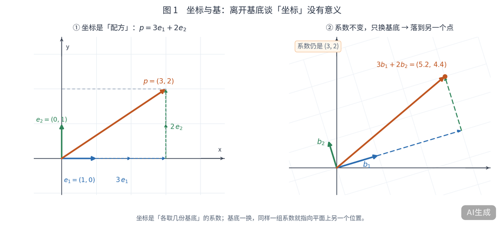
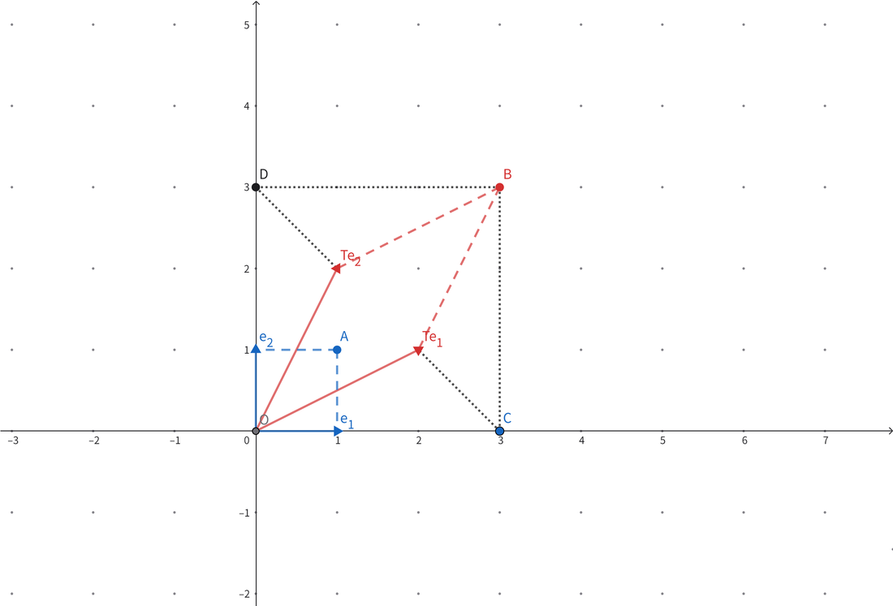
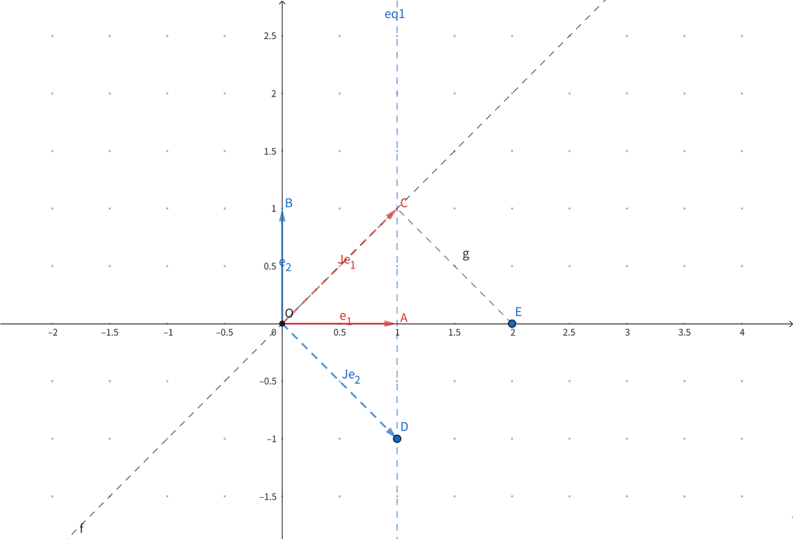

——矩阵代表线性变换的视角
向量坐标是相对而言的，离开基底谈坐标没有意义。在平面直角坐标系中，向量 \(\mathbf v\) 如果可以表示成 \(\mathbf v=v_1\mathbf e_1+v_2\mathbf e_2\)，其中 \(\mathbf e_1\) 和 \(\mathbf e_2\) 是平面直角坐标系的基向量 \(\begin{pmatrix}1\\0\end{pmatrix}\) 和 \(\begin{pmatrix}0\\1\end{pmatrix}\)，那么根据向量加法，\(\mathbf v=v_1\begin{pmatrix}1\\0\end{pmatrix}+v_2\begin{pmatrix}0\\1\end{pmatrix}=\begin{pmatrix}v_1\\v_2\end{pmatrix}\)。
因为 \(\mathbf e_1\) 和 \(\mathbf e_2\) 是不共线的向量，所以任意二维向量都可以在平面直角坐标系下对应一个坐标，这也是它们被称为基的原因。
任意平面向量 \(\mathbf v\) 在 \(\mathbf e_1,\mathbf e_2\) 基底下的坐标 \((v_1,v_2)\) 都能写成矩阵乘法的形式：
\[ \mathbf v=v_1\mathbf e_1+v_2\mathbf e_2=[\mathbf e_1,\mathbf e_2]\begin{pmatrix}v_1\\v_2\end{pmatrix} \]平面直角坐标系下的基是一个 \(2\times 2\) 单位矩阵，作用的结果还是 \(\begin{pmatrix}v_1\\v_2\end{pmatrix}\)。
线性变换是一种不改变原点和向量加法（三角形法则／平行四边形法则）、数乘规则的变换，在平面坐标系下线性变换后网格线仍然平行等距分布。
假设 \(T\) 代表一种线性变换，对于向量 \(\mathbf v,\mathbf w\)，有 \(T(\mathbf v+\mathbf w)=T\mathbf v+T\mathbf w\)，\(T(\lambda\mathbf v)=\lambda(T\mathbf v)\)。
如图 1 所示，\(\mathbf p\) 在标准正交基下的坐标是 \(\begin{pmatrix}3\\2\end{pmatrix}\)，\(\mathbf p=3\mathbf e_1+2\mathbf e_2\)。经过某线性变换 \(T\) 后，\(T(\mathbf p)=T(3\mathbf e_1+2\mathbf e_2)=3(T\mathbf e_1)+2(T\mathbf e_2)\)。线性变换 \(T\) 把原来的基底 \([\mathbf e_1,\mathbf e_2]\) 变成了 \([\mathbf b_1,\mathbf b_2]\)，其中 \(\mathbf b_1=T\mathbf e_1,\ \mathbf b_2=T\mathbf e_2\)。
因为 \(\mathbf b_1\) 和 \(\mathbf b_2\) 仍然在二维空间中，它们分别可以用原来的基 \(\mathbf e_1,\mathbf e_2\) 线性表示。
向量 \(\mathbf p\) 经过线性变换后得到的向量 \(T\mathbf p\) 在新基 \([\mathbf b_1,\mathbf b_2]\) 下的表示就是
\[ T(\mathbf p)=3\mathbf b_1+2\mathbf b_2=[\mathbf b_1,\mathbf b_2]\begin{pmatrix}3\\2\end{pmatrix} \]那么在原来的基（平面直角坐标系）下，\(T\mathbf p\) 是在哪个位置呢？我们要做的就是把新基 \([\mathbf b_1,\mathbf b_2]\) 用原来的基 \([\mathbf e_1,\mathbf e_2]\) 表示出来，才能显示 \(T\mathbf p\) 在平面直角坐标系下的位置。因为这个线性变换仍然在二维空间中，它们一定能被 \(\mathbf e_1\) 和 \(\mathbf e_2\) 的线性组合表示，即
\[ \mathbf b_1=a_{11}\mathbf e_1+a_{21}\mathbf e_2=[\mathbf e_1,\mathbf e_2]\begin{pmatrix}a_{11}\\a_{21}\end{pmatrix},\qquad \mathbf b_2=a_{12}\mathbf e_1+a_{22}\mathbf e_2=[\mathbf e_1,\mathbf e_2]\begin{pmatrix}a_{12}\\a_{22}\end{pmatrix} \] \[ \begin{aligned} T\mathbf p&=[\mathbf b_1,\mathbf b_2]\begin{pmatrix}3\\2\end{pmatrix} =\left[[\mathbf e_1,\mathbf e_2]\begin{pmatrix}a_{11}\\a_{21}\end{pmatrix},\ [\mathbf e_1,\mathbf e_2]\begin{pmatrix}a_{12}\\a_{22}\end{pmatrix}\right]\begin{pmatrix}3\\2\end{pmatrix}\\[3pt] &=[\mathbf e_1,\mathbf e_2]\begin{bmatrix}a_{11}&a_{12}\\a_{21}&a_{22}\end{bmatrix}\begin{pmatrix}3\\2\end{pmatrix} \end{aligned} \]对比线性变换前 \(\mathbf p=[\mathbf e_1,\mathbf e_2]\begin{pmatrix}3\\2\end{pmatrix}\) 和线性变换后 \(T\mathbf p=[\mathbf e_1,\mathbf e_2]\begin{bmatrix}a_{11}&a_{12}\\a_{21}&a_{22}\end{bmatrix}\begin{pmatrix}3\\2\end{pmatrix}\)，我们发现线性变换 \(T\) 对 \(\mathbf p\) 的作用完全由矩阵 \(A=\begin{bmatrix}a_{11}&a_{12}\\a_{21}&a_{22}\end{bmatrix}\) 确定，它将 \(\mathbf p\) 从平面直角坐标系的 \(\begin{pmatrix}3\\2\end{pmatrix}\) 变换到 \(\begin{bmatrix}a_{11}&a_{12}\\a_{21}&a_{22}\end{bmatrix}\begin{pmatrix}3\\2\end{pmatrix}\)。
而这个矩阵的列 \(\begin{pmatrix}a_{11}\\a_{21}\end{pmatrix}\)、\(\begin{pmatrix}a_{12}\\a_{22}\end{pmatrix}\) 刚好就是原来基底 \(\mathbf e_1\) 和 \(\mathbf e_2\) 变换后的位置。
因为基向量可以张成空间中任意向量，所以对于原来平面直角坐标系下的任意坐标 \(\begin{pmatrix}x\\y\end{pmatrix}\)，经过线性变换 \(T\) 后的新位置就是
\[ \begin{bmatrix}a_{11}&a_{12}\\a_{21}&a_{22}\end{bmatrix}\begin{pmatrix}x\\y\end{pmatrix} \]
这就是学习线性组合、张成和基的应用所在，它告诉我们线性变换可以用矩阵表示，矩阵的本质就是一种线性变换。如果这个变换直接作用在标准正交基下，代表线性变换 \(T\) 的矩阵 \(A\) 的列就是对应基向量的新位置，对任意向量的作用就相当于左乘 \(A\)。
标准正交基下，基向量 \(\begin{pmatrix}1\\0\end{pmatrix}\) 和 \(\begin{pmatrix}0\\1\end{pmatrix}\) 围成的小方格面积为 1。线性变换后基向量 \(\begin{pmatrix}a\\c\end{pmatrix}\) 和 \(\begin{pmatrix}b\\d\end{pmatrix}\) 围成的面积是 \(|a_{11}a_{22}-a_{12}a_{21}|\)，正好是 \(|\det(A)|\)。行列式的大小即线性变换带来的面积大小变化，行列式的正负表示线性变换带来的方向变化，例如 y 轴被变换至 x 轴的顺时针方向 \((0,\pi)\)。
如下图所示，对于线性变换 \(T\) 后基向量 \(T\mathbf e_1=\begin{pmatrix}a\\c\end{pmatrix}\)、\(T\mathbf e_2=\begin{pmatrix}b\\d\end{pmatrix}\) 围成的平行四边形面积
\[ S=(a+b)(c+d)-2\cdot\tfrac12(a+b)c-2\cdot\tfrac12(c+d)b=ad-bc=\det\begin{bmatrix}a&b\\c&d\end{bmatrix} \]
对于二元随机变量 \((X,Y)\) 到 \((U,V)\) 的变换，其中 \(U=X+Y,\ V=X-Y\)，原支撑集为 \(0<y<x<1\)，要求变换后对应的支撑集，关键是确定原支撑集区域顶点代表的向量以及变换后向量的位置。
写成向量形式
\[ \begin{pmatrix}U\\V\end{pmatrix}=\begin{bmatrix}1&1\\1&-1\end{bmatrix}\begin{pmatrix}X\\Y\end{pmatrix} \]发现雅可比矩阵 \(J\) 正好是代表从 \((X,Y)\) 到 \((U,V)\) 线性变换的矩阵。平面直角坐标系下的基 \(\begin{pmatrix}1\\0\end{pmatrix}\) 和 \(\begin{pmatrix}0\\1\end{pmatrix}\) 被分别变换到 \(\begin{pmatrix}1\\1\end{pmatrix}\) 和 \(\begin{pmatrix}1\\-1\end{pmatrix}\)。
由下图可知，原支撑集由 \(OAC\) 围成的三角形区域构成，已知线性变换对应的矩阵就是雅可比矩阵 \(J=\begin{bmatrix}1&1\\1&-1\end{bmatrix}\)。\(O\) 是原点，保持不变；\(A=\begin{pmatrix}1\\0\end{pmatrix}\) 变换后的位置为
\[ \begin{bmatrix}1&1\\1&-1\end{bmatrix}\begin{pmatrix}1\\0\end{pmatrix}=\begin{pmatrix}1\\1\end{pmatrix}, \qquad\text{正好是 }C\text{ 点位置} \]\(C=\begin{pmatrix}1\\1\end{pmatrix}\) 变换后的位置为
\[ \begin{bmatrix}1&1\\1&-1\end{bmatrix}\begin{pmatrix}1\\1\end{pmatrix}=\begin{pmatrix}2\\0\end{pmatrix}, \qquad\text{定为点 }E \]那么变换后支撑集就是 \(OCE\) 围成的三角形区域。
面积验证：\(OAC\) 的面积为 \(\tfrac12\)，\(OCE\) 的面积为 \(1\)，面积是原来的 2 倍；\(\det(J)=-1-1=-2\)，绝对值 2 正好是面积放大倍数，负号表示线性变换后的基向量相对位置发生变化，图中体现的就是 \(J\mathbf e_2\) 向量在 \(J\mathbf e_1\) 向量的顺时针方向。
